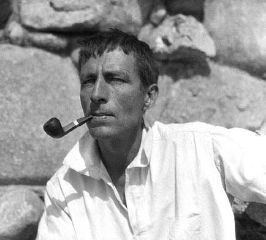

His father was a Presbyterian minister and professor of Old Testament literature, who travelled widely in Europe, where much of Jeffers's early education took place. As a boy, Jeffers had tried to fly with homemade wings and many of his poems describe birds or refer to the myth of Icarus - his favorite animal and symbol was the hawk. He attended private schools in Switzerland and Germany. He began writing in 1912, and, from 1924 on, lived in seclusion by the ocean near Carmel, Calif., where he built his own stone house.
